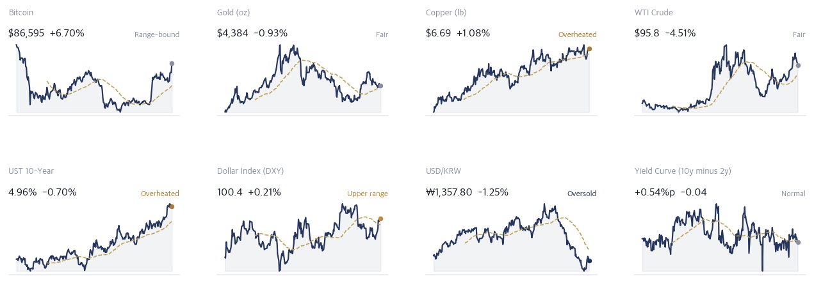
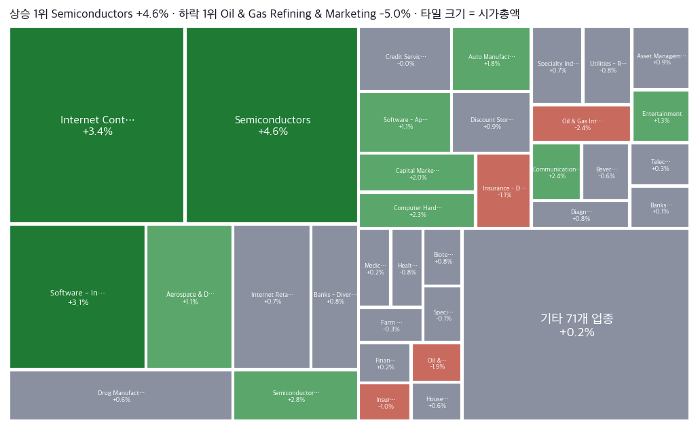
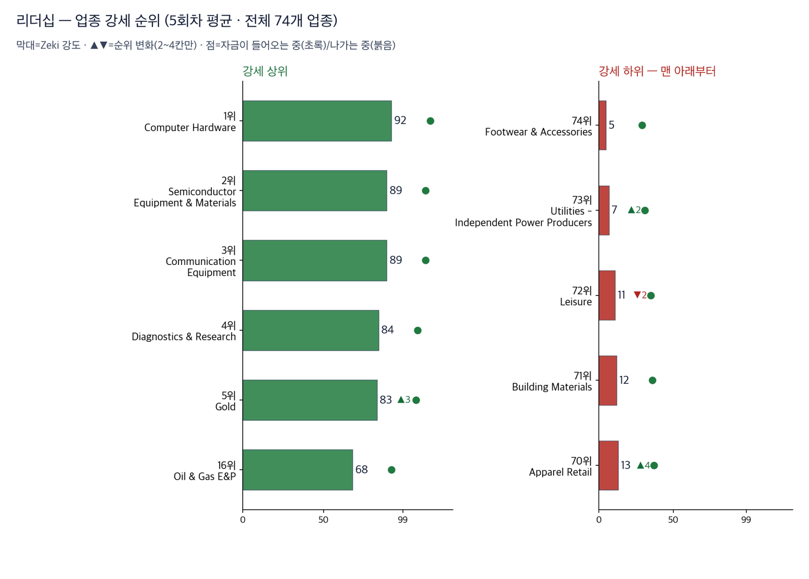
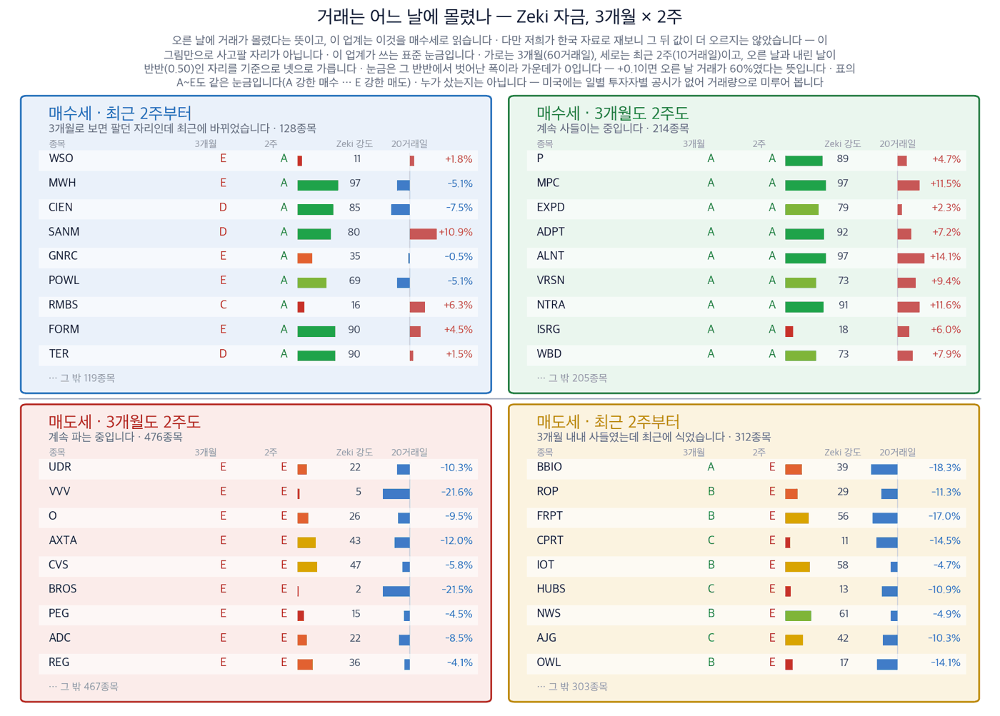
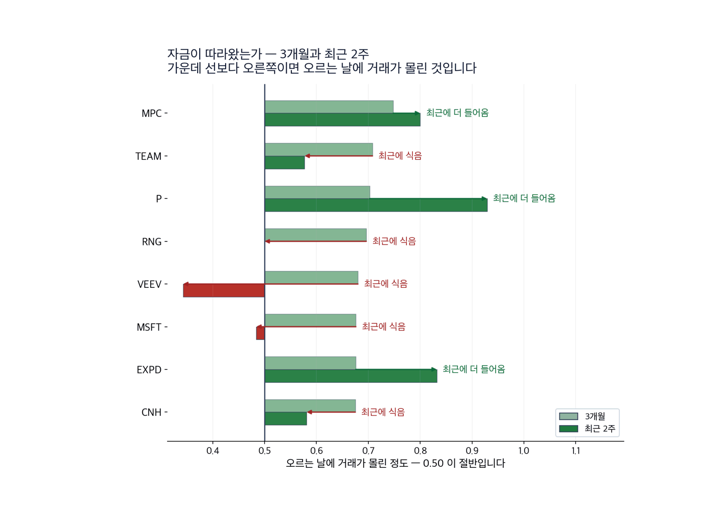
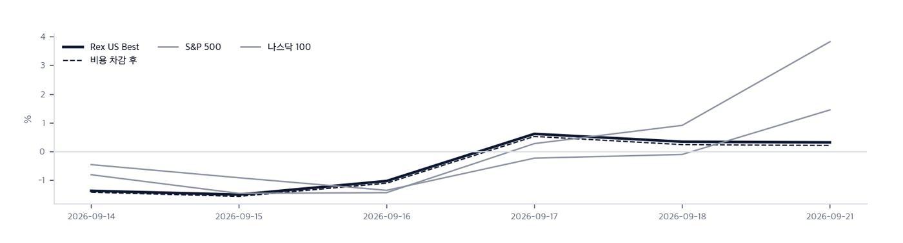

|
ZekiRex™ Apex US — 2026년 9월 22일
오늘의 판단 · 1/3
데이터 기준 9/21 (ET) 종가 · 밤사이 서울 9/22 종가(현지시간) |
ZekiRex™ |
|
|
유가 4.5% 급락… 나스닥 최고, 정유는 5% 하락 |
| 저희가 정한 규칙이 고른 종목과 그 성적을 매일 그대로 싣습니다. 맞았든 틀렸든 지우지 않습니다. |
|
THE REX CALL
9월 21일 유가와 미 국채 10년물 금리가 함께 내렸습니다. 나스닥 종합은 2.26% 올라 사상 최고입니다. 같은 하락에 정유주는 5% 안팎 내렸습니다.
9월 21일 종가로 매매는 없었습니다. 손절가를 밑돈 종목도 없습니다. 포트폴리오 슬롯 100% 소진 상태입니다.
오늘 반드시 알아야 할 것
1. 9월 21일 서부텍사스산원유는 4.51% 내려 배럴당 95.8달러입니다. 같은 날 미 국채 10년물은 4.96%로 내렸습니다. 두 값이 함께 내린 것은 9월 18일과 반대입니다. 그날은 유가만 내리고 금리는 올랐습니다. 2. 나스닥 종합은 2.26% 올라 27,122로 사상 최고입니다. S&P 500은 1.49%, 다우는 0.71%, 러셀 2000은 0.52% 올랐습니다. 상승이 큰 종목에 몰렸습니다. 3. 어드밴스드마이크로디바이시스가 시가총액 1조 달러를 넘었습니다. 엔비디아·브로드컴·마이크론에 이어 미국에서 네 번째입니다. 인공지능 쪽에 돈이 몰린 하루입니다. 4. 같은 날 정유·판매 4종목은 4.17~5.70% 내렸습니다. 원유가 내리면 정제마진이 넓어진다는 설명과는 반대 방향입니다. 원유와 제품이 함께 내린 쪽에 가깝습니다. 5. 비트코인은 6.70% 올라 86,595달러입니다. 8개월 만의 최고가입니다. 미 국채 10년물이 내린 날 함께 올랐습니다.
| |
 이 그림 읽는 법 | 켜진 등 | 오늘 시장이 어떤 상태인지 알려 줍니다. 초록은 매수 우위, 노랑은 관망, 빨강은 매수 자제입니다. | | 채워진 칸 | 7가지 조건 중 몇 가지를 만족하는지입니다. 많이 만족할수록 오르는 종목이 넓게 퍼져 있습니다. | | 칸이 다 찼는데 노랑·빨강이면 | 다른 이유로 한 단계 낮춘 것입니다. 그림 아래에 그 이유를 적었습니다. |
|
최근 10거래일 국면 추이 (왼쪽이 과거) 방향 — 어디까지 왔나. Zeki 신호등은 7가지 조건을 세어 정합니다. S&P 500과 나스닥 종합이 6가지, 러셀 2000이 5가지입니다. 지수 3개 모두 장기 구조는 온전합니다. 노란불이 남은 까닭은 러셀 2000입니다. 작은 종목이 큰 종목만큼 오르지 못해 상승이 넓게 퍼지지 않았습니다.
| |
| 오늘의 조치 |
| 오늘 신규 매매 없음. 규칙이 요구하지 않는 날에 거래하지 않는 것도 하나의 결정입니다. |
|
| 오늘 하나만 깊이 보면 |
|
유가 4.5% 하락, 기술주와 정유주가 갈라졌습니다
9월 21일 서부텍사스산원유는 4.51% 내린 배럴당 95.8달러입니다. 미 국채 10년물은 4.96%로 내렸고 30년물은 5.30%입니다. 달러인덱스는 100.4로 0.21% 올라 거의 그대로입니다. 통화 쪽 움직임이 없는데 원유와 미 국채 10년물이 함께 내렸습니다. 나스닥 종합은 2.26% 올라 27,122로 사상 최고입니다. 어드밴스드마이크로디바이시스는 시가총액 1조 달러를 넘었습니다. 같은 날 정유·판매 4종목은 4.17~5.70% 내렸습니다. 왜 그런가. 한국과 미국 지면이 같은 하락을 다르게 셉니다. 미국 지면은 유가가 내려 상승이 열렸다고 적었습니다. 한국 지면은 금리와 유가의 불안이 낮아졌다는 쪽을 앞세웠고, 외국인 매수가 반도체에 몰렸다고 적었습니다. 두 설명은 부딪치지 않습니다. 한쪽은 값을 매기는 기준을 말하고 다른 쪽은 사는 사람을 말합니다. (월스트리트저널·배런스·인베스터스비즈니스데일리·매경이코노미) 다음에 무엇이. 다음 판에서 함께 볼 것은 2가지입니다. 원유와 제품의 차이, 그리고 9월 24일 워싱턴 회담입니다. 차이가 넓어지면 오늘의 수요 쪽 설명을 바꿉니다. 회담에서는 관세와 희토류가 한 상에 오르므로 원가 전망이 하루에 바뀔 수 있습니다.
그래서 우리는: 정유주를 들고 계시다면 오늘 보실 것은 유가 기사가 아니라 원유와 제품의 차이입니다. 정유 이익은 그 차이에서 나옵니다. 9월 21일은 그 차이가 넓어지지 않았다는 쪽에 섰습니다. 반대쪽도 함께 알려 드립니다. 원유가 공급 때문에 내린 것이라면 그 차이는 다시 넓어집니다. 그때는 9월 21일에 내린 정유주가 싸진 것입니다. 기술주를 들고 계시다면 9월 21일에 오른 까닭이 실적이 아니라 금리라는 점을 보셔야 합니다. 금리가 다시 오르면 같은 크기로 돌아올 수 있습니다.
Rex Lens™
| |
| 그 밖에 알아야 할 것 |
| 목요일 워싱턴 미·중 정상회담, 희토류가 걸림돌 · 미국 무역대표가 2025년 부산 합의의 연장을 두고 중국이 불확실성을 만든다고 지적했습니다. 두 정상은 목요일 워싱턴에서 만납니다. (South China Morning Post) → 희토류는 자석과 모터에 들어가므로 자동차와 방산의 원가로 이어집니다. 그 원가가 회담 하루에 정해질 수 있습니다. 자동차나 방산을 들고 계시다면 회담 전에 크게 늘리는 것은 한 자리의 결과에 거는 일입니다. | | 유럽연합 대러 제재, 연장 합의 불발 · 유럽연합이 오늘 만료되는 대러 제재의 연장에 합의하지 못했습니다. 일부 인사를 명단에서 빼는 논의도 다시 열립니다. (Euronews · France 24) → 제재가 풀리는 쪽이면 러시아 원유가 나갈 길이 넓어집니다. 그러면 오늘 머리기사의 유가와 같은 축 위에 놓입니다. 에너지를 들고 계시다면 공급이 늘어나는 쪽의 이야기로 읽으셔야 합니다. | | 캐나다은행 총재, 관세 유지되면 4분기 성장 절반 · 캐나다은행 총재가 미국 관세가 그대로 유지되면 4분기 성장률이 절반으로 줄 수 있다고 말했습니다. 기업 투자도 미뤄질 수 있다고 덧붙였습니다. (Globe and Mail) → 물가를 올리면서 성장을 깎는 조합은 중앙은행이 쓸 수 있는 수를 줄입니다. 저희 선별은 관세를 재지 않으므로 명단은 바뀌지 않습니다. 캐나다 쪽 매출이 큰 회사를 들고 계시다면 4분기 실적에서 값으로 드러납니다. | | 인도 증권거래소 공모에 100억 달러 넘는 청약 · 인도 국립증권거래소의 23억 달러 공모에 100억 달러가 넘는 청약이 몰렸습니다. 올해 인도에서 가장 큰 공모입니다. (CNBC) → 거래소가 높은 값을 받는다는 것은 수수료 수입에 붙는 기대가 크다는 뜻입니다. 저희가 보는 미국 종목에도 자본시장으로 분류된 회사가 있어 같은 재평가 안에 놓입니다. 증권·거래소를 들고 계시다면 거래대금이 실제로 늘고 있는지를 보셔야 합니다. |
|
한국과 미국을 잇는 것: 뉴욕 독자에게 이번 아시아 마감이 주는 것은 금리 방향의 확인입니다. 9월 22일 서울에서 국고채 3년물은 4.04%로 내렸습니다. 뉴욕에서 미 국채 10년물이 내린 것과 같은 방향입니다. 두 곳의 금리가 함께 내렸다면 한 나라 사정이 아니라 돈의 값이 움직인 것입니다. |
|
|
시장이 오늘 한 일 · 2/3
데이터 기준 9/21 (ET) 종가 · 밤사이 서울 9/22 종가(현지시간) |
ZekiRex™ |
|
|
| 핵심 지표 |
S&P 500 7,765 +1.49% · 고점 −0.4% 7,765로 1.49% 올랐고 52주 고점에서 0.4% 아래입니다. 7가지 조건 가운데 6가지를 통과했습니다. 값은 고점에 닿았는데 조건 하나가 아직 차지 않았습니다. 신고가권 | 나스닥 종합 27,122 +2.26% · 고점 −0.0% 27,122로 2.26% 올라 52주 고점과의 거리가 0.0%입니다. 올린 것은 실적이 아니라 금리입니다. 미 국채 10년물이 4.96%로 내린 날 인공지능 종목에 돈이 몰렸습니다. 과열 | 러셀 2000 2,875 +0.52% · 고점 −6.3% 2,875로 0.52% 올랐고 52주 고점에서 6.3% 아래입니다. 큰 종목이 오른 만큼 오르지 못했습니다. 상승이 넓게 퍼지지 않았다는 뜻입니다. 박스권 | 미 국채 10년 4.96% 4.96%로 내려 5.00% 아래로 돌아왔습니다. 9월 18일에는 5.00%로 올랐던 자리입니다. 유가가 내린 날 함께 내렸으므로 물가 쪽 기대가 낮아진 것으로 읽힙니다. 과열 | 달러인덱스 100.4 100.4로 0.21% 올라 거의 그대로입니다. 통화가 움직이지 않았는데 원유와 미 국채 10년물이 함께 내렸습니다. 달러 때문이 아니라 수요와 물가 쪽 이야기입니다. 상단권 | 포트폴리오 +7.65% 현금 71% · 보유 4종목 설정 이후 |
|
Rex Pulse 거시 지표 16종 1년 추이  Rex Pulse™ — 지수·가상자산 / 통화 / 원자재 / 채권 16종, 1년 흐름과 50일 평균값(점선) · 기준 뉴욕 9/21 종가, 서울 9/22 종가(현지시간) |
Zeki 신호등은 노란불입니다. 9월 21일 종가 기준으로 지수 3개 모두 장기 구조가 온전합니다. 이 하루를 가른 것은 원유입니다. 서부텍사스산원유가 4.51% 내리는 동안 미 국채 10년물은 4.96%로 내렸고 달러인덱스는 100.4로 그대로였습니다. 구리는 1.08% 올라 과열 자리에 있습니다. 금은 0.93% 내렸습니다. 그래서 볼 것은 구리입니다. 구리가 파운드당 6.69달러를 지키는 동안은 원유 하락을 공급 쪽으로 읽습니다. 이 값이 내려가면 수요가 줄어든 쪽으로 봐야 하고, 그때는 정유와 기술주가 함께 부담을 받습니다. |
업종 히트맵 — 오늘의 상승·하락 지도  색은 당일 등락(짙을수록 큼), 타일은 시가총액입니다. 상단에 당일 상승·하락 1위가 적혀 있고, 큰 칸이 움직인 날이 지수가 움직인 날이라는 뜻입니다 — 아래 리더십 순위(추세의 힘)와 함께 읽으십시오. |
| 리더십 — 업종 강세 순위 |
 이 그림 읽는 법 | 막대 | 그 업종 종목들을 Zeki 강도 순으로 세웠을 때 **종목 절반이 그 위, 절반이 그 아래인 값**입니다. 최근 5회차를 평균해 하루치 흔들림을 걷어냈습니다. | | ▲▼ 숫자 | 하루 전보다 순위가 몇 칸 움직였는지입니다. 1칸은 너무 작고 5칸 이상은 절반이 되돌아와서(실측) 2~4칸만 적습니다. | | 점 | 20거래일 자금 순위의 방향입니다. 초록이면 들어오는 중, 붉으면 나가는 중입니다. | | 공동 순위 | 값이 같으면 같은 순위입니다. 억지로 가르지 않습니다. | | 강세 상위 | 강도가 가장 높은 업종들입니다. 자리가 열리면 여기서부터 찾습니다. | | 강세 하위 | 전체 업종 가운데 맨 아래입니다. 번호는 왼쪽과 같은 잣대라, 38개 업종이면 38위가 가장 약합니다. 지금 새로 살 자리가 아니고, 들고 계신 종목이 여기 속하면 손절가부터 확인하실 자리입니다. 바닥에서 돌아서는 업종은 막대보다 점이 먼저 초록으로 바뀝니다. | | 번호가 건너뛰면 | ＋ 표시가 붙은 업종입니다. 맨 아래 다섯에 들지는 않았지만 본문이 짚었거나 저희가 들고 있어 함께 실었습니다. 자료가 빠진 것이 아닙니다. |
| 순위 | 업종 | Zeki 강도 | 변화 |
|---|
| 1위 | Computer Hardware | 92 | | | 2위 | Semiconductor Equipment & Materials | 89 | | | 3위 | Communication Equipment | 89 | | | 74위 | Footwear & Accessories | 5 | | | 73위 | Utilities - Independent Power Producers | 7 | ▲2 | | 72위 | Leisure | 11 | ▼2 |
|
| 외국인과 기관 — 돈이 실제로 어디로 갔나 |
 이 그림 읽는 법 | 점 하나 | 종목 하나입니다. 가로·세로 위치가 두 값을 그대로 나타내고, 가운데 가로·세로로 그어진 두 선이 기준선입니다. 네 귀퉁이의 이름표가 그 칸의 뜻입니다. | | 점 크기 | 최근 20거래일 등락폭입니다. 오르든 내리든 크게 움직였으면 큰 점입니다. | | 점 색 | Zeki 강도입니다. 초록일수록 주가가 시장에서 강합니다. | | 30종목만 | 이름이 겹치면 못 읽기 때문입니다. 가운데 몰린 나머지는 움직임이 거의 없는 종목들이라 뺐습니다. |
 이 그림 읽는 법 | 이 그림이 말하지 않는 것 | 같은 기간의 수급과 등락을 나란히 놓은 것입니다. 앞으로는 이렇습니다 — 외국인과 기관이 사면 하루 이틀은 실제로 오릅니다. 그 다음 되돌립니다. 그리고 그 폭이 세금과 수수료보다 작습니다. 그래서 이 그림을 보고 사고파시면 손해입니다. 둘 다 사들이는 것을 보고 그 다음 날 사면, 20거래일 뒤에 올라 있을 확률은 48%입니다 — 아무 종목이나 골랐을 때(49%)와 같습니다. 저희가 503종목 17년치로 쟀습니다. | | 네 칸 | 가로와 세로 두 값이 각각 기준선을 넘었는지로 넷을 가릅니다. 오른쪽 위는 둘 다 넘은 곳, 왼쪽 아래는 둘 다 못 넘은 곳, 나머지 두 칸은 한쪽만 넘은 곳입니다. 칸 이름이 그 칸에 든 종목의 상태를 한 문장으로 적어 둔 것입니다. | | 가운데 두 칸 | 두 기간을 비교하는 자리입니다. 글자 A~E가 있으면 이 업계가 쓰는 표준 등급으로, A는 강한 매수, B는 매수 우세, C는 매수와 매도가 반반, D는 매도 우세, E는 강한 매도를 뜻합니다(전체를 다섯으로 나눈 순위라 A가 상위 20%입니다). 숫자가 있으면 그 기간에 산 양에서 판 양을 뺀 것입니다. | | 칸마다 9종목 | 그 칸에서 움직임이 가장 큰 순서입니다. 나머지는 칸 아래에 몇 종목인지만 적었습니다. 옆 산점도가 이름을 다는 종목이 바로 이 9종목씩입니다. | | 20거래일 막대 | 0을 가운데 두고 오른쪽이 상승, 왼쪽이 하락입니다. 길이는 같은 칸 안에서만 서로 비교하십시오 — 칸마다 기준이 다릅니다. | | Zeki 강도 | 1~99 순위입니다. 막대가 길수록, 초록에 가까울수록 그 종목의 주가가 시장에서 강합니다. |
|
수급과 거래량을 한 줄로 | 종목 | 수급 3개월→2주 | 거래량 | 어떻게 읽나 |
|---|
| HUBS HUBS | C → E ↓ | 1.75배 | 주의 — 등급이 내리는데 물량이 늘었습니다 | | ROP ROP | B → E ↓ | 1.73배 | 주의 — 등급이 내리는데 물량이 늘었습니다 | | NWS NWS | B → E ↓ | 1.67배 | 주의 — 등급이 내리는데 물량이 늘었습니다 | | BBIO BBIO | A → E ↓ | 1.44배 | 주의 — 등급이 내리는데 물량이 늘었습니다 | | P P | A → A = | 6.21배 | 관심✓ — 3개월도 2주도 사는 쪽입니다 | | WBD WBD | A → A = | 3.30배 | 관심✓ — 3개월도 2주도 사는 쪽입니다 | | GNRC GNRC | E → A ↑ | 2.88배 | 관심✗ — 매수세가 세게 붙었습니다 | | MPC MPC | A → A = | 1.97배 | 관심✓ — 3개월도 2주도 사는 쪽입니다 |
거래량은 최근 5거래일 평균 ÷ 50일 평균입니다. ✓ 는 저희 진입 규칙(MACD 라인 > 0)도 통과했다는 뜻이고, ✗ 는 수급은 좋지만 규칙 밖이라는 뜻입니다. 이 읽는 법이 맞는지는 지금 세고 있습니다. |
결론은 아직 없습니다 — 칸마다 9건이고 60건이 필요합니다. 하루 9건씩 쌓이므로 약 6거래일 뒤에 답이 나옵니다. 그때 답하는 것은 「매수세로 돌아선 종목이 정말 올랐나, 매도세로 돌아선 종목이 정말 내렸나」입니다. 9월 18일부터 세고 있습니다 — 매도세 · 3개월도 2주도 9건 · 매도세 · 최근 2주부터 9건 · 매수세 · 3개월도 2주도 9건 · 매수세 · 최근 2주부터 9건.

이 그림 읽는 법
| 막대 둘 | 위가 3개월, 아래가 최근 2주입니다. 같은 종목의 두 기간을 나란히 놓았습니다. |
| 가운데 선 | 0.50 입니다. 오른쪽이면 오르는 날에 거래가 더 몰렸고, 왼쪽이면 내리는 날에 몰렸습니다. |
| 화살표 | 3개월에서 2주로 가는 방향입니다. 오른쪽으로 가면 최근에 더 들어온 것이고, 왼쪽이면 식은 것입니다. |
| 맨 오른쪽 글씨 | 그 방향을 말로 적은 것입니다 — 「최근에 더 들어옴」이면 자금이 이어지는 중입니다. |
미국에는 일별로 누가 샀는지 공시가 없습니다. 기관 보유는 분기에 한 번 그것도 45일 늦게 나옵니다. 그래서 이 그림은 사람이 아니라 거래를 봅니다 — 0.50 이 기준이고, 오른쪽으로 갈수록 3개월 동안, 위로 갈수록 최근 2주 동안 오르는 날에 거래가 몰렸다는 뜻입니다.
업종 — 값의 강세와 돈의 흐름을 나란히
돈이 먼저 온 곳 — 값은 아직
| 업종 | 강세 | 자금 | 20거래일 |
|---|
| Consulting Services | 105 | 21 | +0.007 |
| Packaged Foods | 102 | 25 | +0.003 |
| Information Technology Services | 73 | 4 | +0.056 |
값만 센 곳 — 돈은 빠지는 중
| 업종 | 강세 | 자금 | 20거래일 |
|---|
| Semiconductor Equipment & Materials | 5 | 73 | -0.051 |
| Electronic Components | 14 | 67 | -0.046 |
| Metal Fabrication | 43 | 91 | -0.087 |
강세 순위 — Zeki 강도(12개월 가중)로 세운 순위입니다. 최근 5회차를 평균해 하루치 흔들림을 걷어냈습니다.
자금 순위 — 20거래일 순매수로 세운 순위입니다. 값이 아니라 **돈이 들어온 양**을 봅니다.
공동 순위 — 값이 같으면 같은 순위를 줍니다. 억지로 가르지 않습니다.
두 순위가 어긋나면 — 그 자리가 볼 만합니다. 돈이 먼저 오면 값이 아직인 것이고, 값이 먼저 세면 돈이 빠지는 중일 수 있습니다.
|
|
우리가 한 일 · 3/3
데이터 기준 9/21 (ET) 종가 · 밤사이 서울 9/22 종가(현지시간) |
ZekiRex™ |
|
|
기준 2026-09-21 15:46 ET 실제 운용 계좌를 그대로 비춥니다 종목·비중·매매·손절가는 모두 실제 계좌의 것입니다. 이 지면에서 고른 것은 하나도 없습니다. 계좌 금액과 주식 수는 싣지 않습니다. 추천이 아닙니다. | 종목 | 비중 | 손익 | 현재가 | 손절가 | 여유 | 보유 기간 | 다음 이벤트 | | IRDM | 7.4% | −0.1% | $48.02 | $44.87 | +7.0% | 29일 | — | | MPC | 8.2% | +11.8% | $402.49 | $331.32 | +21.5% | 29일 | 실적 11-03 | | DINO | 3.5% | +14.6% | $109.67 | $88.07 | +24.5% | 34일 | 실적 10-29 | | DELL | 9.8% | +32.4% | $577.80 | $401.41 | +43.9% | 29일 | 실적 11-27 | | 현금 | 71.2% | 단기 국채 ETF(USFR)에 예치해 둡니다 |
|
실제로 사고판 기록 | 09-02 | USFR | 매수 | $50.48 | | 08-24 | MPC | 매수 | $360.13 | | 08-24 | IRDM | 매수 | $48.05 | | 08-24 | DELL | 매수 | $436.32 | | 08-19 | DINO | 매수 | $95.73 |
값은 실제로 사고판 값 그대로입니다. 주식 수와 금액은 싣지 않습니다. |
| Rex US Best — 이 뉴스레터에 실린 이름들의 성적표 |
무엇인가. 이 뉴스레터에 이름이 오른 회사들을 모아 만든 지수입니다. 관문을 통과한 종목과 포트폴리오 보유 종목을 합쳐 최대 스물아홉 곳까지, 모두 같은 비중으로 담습니다. 명단은 판이 나가는 날 그대로 적어 두고 뒤에 고치지 않습니다 — 지나고 나서 좋았던 것만 골라 넣으면 어떤 성적표도 좋아 보이기 때문입니다. 무엇을 위한 것인가. 저희가 지면에 적은 이름이 실제로 값을 하는지 숫자로 남기기 위해서입니다. 그래서 같은 기간 S&P 500 · 나스닥 100과 나란히 놓고, 사고파는 비용을 뺀 뒤의 숫자도 함께 싣습니다. 숫자 읽는 법. Zeki 강도는 같은 기간 다른 주식과 견준 주가의 힘을 100점 만점으로 매긴 것입니다. 100점에 가까울수록 많이 오른 쪽입니다. 아닌 것. 살 수 있는 상품이 아니고, 추천도 아니며, 저희 계좌의 성적도 아닙니다. |
 이 그림 읽는 법 | 무엇인가 | 그날 편지에 실린 이름 전부(Rex 25 + 보유 종목)를 똑같은 무게로 담았다면 어떻게 됐을지입니다. 살 수 있는 상품이 아니라 저희 명단의 성적표입니다. | | 두 선 | 실선은 비용 전, 점선은 매매비용을 뺀 뒤입니다. 명단이 바뀌면 갈아타는 비용이 들기 때문에 둘을 함께 싣습니다. | | Best 의 뜻 | 시장에서 최고라는 뜻이 아니라 저희 기준으로 가장 높은 점수를 받은이라는 뜻입니다. | | 길이 | 짧은 구간은 운과 실력을 가르지 못합니다. 120거래일이 쌓이기 전까지는 이 숫자로 판단하지 마십시오. |
|
Rex US Best — 지수 출범 이후 (9/11→9/21) | Rex US Best | +0.22% | | — | | S&P 500 | +1.46% | | −1.24%p | | 나스닥 100 | +3.83% | | −3.61%p |
6거래일 · 비용을 뺀 값입니다. 비용 전은 +0.33%입니다. 오른쪽은 우리가 앞선 폭입니다. | 지수 대비 −3.61%p. 6회차째입니다. 저희가 미리 정한 신뢰 문턱은 120회차이고 지금은 그 5% 지점입니다. 이 숫자로는 아직 잘한다고도 못한다고도 말할 수 없습니다. |
6거래일치입니다. 짧은 구간은 운과 실력을 가르지 못하므로 120거래일이 쌓이기 전까지는 이 숫자로 판단하지 마십시오. 많이 오른 쪽 | Advanced Micro Devices AMD | +9.95% — 평소보다 훨씬 많이 거래됐습니다. 값은 지난 1년 중 가장 높습니다. | | Allient ALNT | +8.82% | | Okta OKTA | +4.91% — 값은 지난 1년 중 가장 높습니다. |
많이 내린 쪽 | CoreCivic CXW | −8.00% | | HF Sinclair DINO | −5.70% | | Marathon Petroleum MPC | −5.30% — 평소보다 훨씬 많이 거래됐습니다. |
새로 들어온 종목 | WisdomTree WT | 저희 조건을 새로 갖춰 명단에 올랐습니다 |
빠진 종목 | Dave DAVE | 9월 15일부터 4거래일, −6.41%. Zeki 강도가 87점으로 내려 64위가 되어 빠졌습니다 |
|
| 보유 종목 소식 — 오늘 |
| DELL | 머니투데이는 22일 델 테크놀로지스가 한국벤처투자에 GPU 서버 파워엣지 XE7745를 공급한다고 전했습니다. — Money Today 2026-09-22 09:09 KST |
|
| Rex 25™ — 당일 등락률 전체 순위 |
| 01 AMD Advanced Micro Devices+9.95% | | 02 ALNT Allient+8.82% | | 03 OKTA Okta+4.91% | | 04 WT WisdomTree+2.82% | | 05 MU Micron Technology+2.77% | | 06 BJRI BJ's Restaurants+2.64% | | 07 MRX Marex Group+1.77% | | 08 ● DELL Dell Technologies+1.28% | | 09 MTRN Materion+1.23% | | 10 TGTX TG Therapeutics+0.51% | | 11 MT Arcelor Mittal NY Regi+0.01% | | 12 PACS PACS Group-0.14% | | 13 CHEF The Chefs' Warehouse-0.14% | | 14 CGAU Centerra Gold-0.30% | | 15 OII Oceaneering Internatio-0.78% | | 16 CVI CVR Energy-1.01% | | 17 APA APA-2.36% | | 18 LPG Dorian LPG-2.60% | | 19 SLDE Slide Insurance Holdin-2.93% | | 20 CVE Cenovus Energy-3.22% | | 21 PSX Phillips 66-4.17% | | 22 GEO Geo Group Inc (The) RE-4.75% | | 23 ● MPC Marathon Petroleum-5.30% | | 24 ● DINO HF Sinclair-5.70% | | 25 CXW CoreCivic-8.00% |
|
8,055종목 가운데 66종목이 저희 기준을 넘었고 그중 위 25종목을 싣습니다. 상승 쪽 맨 위는 어드밴스드마이크로디바이시스이고, 얼라이언트와 옥타가 뒤를 이었습니다. 하락 쪽은 정유가 차지했습니다. HF싱클레어가 5.70%, 마라톤페트롤리엄이 5.30%, 필립스66이 4.17% 내렸습니다. 명단이 길다고 좋은 소식은 아닙니다. 기준을 넘은 종목이 많다는 것은 값이 넓게 올랐다는 뜻이기도 합니다. |
| ● 표시가 우리 보유 종목입니다. 순서는 등락률만 따릅니다 — 하락 상위에 보유 종목이 있어도 그 자체가 매도 신호는 아닙니다. 매도는 −8% 손절과 오실레이터 이탈, 둘뿐입니다. |
| 관문을 통과한 종목 — 자리가 없어 담지 못한 이름들 |
| 반도체·하드웨어 4 | | AMD Advanced Micro Devic | RS 97 | $615.52 | | MU Micron Technology, I | RS 98 | $1,043.96 | | P Everpure, Inc. | RS 87 | $113.66 | | QRVO Qorvo, Inc. | RS 83 | $117.21 | | 에너지·정유 4 | | LPG Dorian LPG Ltd. | RS 94 | $56.64 | | REPX Riley Exploration Pe | RS 88 | $40.62 | | PSX Phillips 66 | RS 94 | $261.75 | | CVI CVR Energy Inc. | RS 95 | $53.15 | | 금융 3 | | SLDE Slide Insurance Hold | RS 91 | $24.22 | | BFH Bread Financial Hold | RS 85 | $108.00 | | MRX Marex Group Limited | RS 93 | $75.71 | | 소재·광물 3 | | CGAU Centerra Gold Inc. | RS 93 | $22.95 | | WPM Wheaton Precious Met | RS 82 | $147.66 | | TECK Teck Resources Ltd | RS 83 | $66.76 | | 헬스케어 1 | | PACS PACS Group, Inc. | RS 93 | $42.06 |
|
왜 못 담았나. 규칙상 자리는 넷뿐이고 각 자리에 총자산 25%가 들어갑니다 — 한 종목이 −8%에 걸려도 계좌 전체로는 2% 손실이 되도록 맞춘 구조입니다. 자리를 비우는 길은 손절과 오실레이터 이탈 둘뿐이라, 더 좋은 후보가 나와도 갈아타지 않습니다.
통과 목록이 말하는 것. 66개가 36개 업종에 흩어져 있고 상위 3개 업종을 합쳐도 12종목(18%)뿐입니다. 시장의 강세는 넓습니다. 우리 4자리는 에너지·정유 2, 반도체·하드웨어 1로 나뉘어 있고 가장 큰 쪽이 에너지·정유입니다입니다. (업종 미확인 1종목 제외) 아래는 그중 종합점수 상위 15개이며, 매수 추천이 아니라 자리가 열리면 작업을 시작할 순서입니다. |
| 보유 비중 — 하한 8% / 진입 25% |
| Dell Technologies DELL9.8% | | Marathon Petroleum MPC8.2% | | Iridium Communications IRDM7.4% | | HF Sinclair DINO3.5% |
25%는 진입 시점의 크기이지 보유 한도가 아닙니다. 오른 종목을 크다는 이유로 줄이지 않습니다. |
| 한 줄 정리: Zeki 신호등은 노란불입니다. 그런데 나스닥 종합 등급은 과열이고 S&P 500은 신고가권입니다. 두 표시가 서로 다른 말을 하는 것처럼 보입니다. 같은 말입니다. 값은 고점에 닿아 있는데, 그 값을 받치는 조건은 지수 3개 가운데 2개에서 아직 다 차지 않았습니다. 그래서 값을 따라가되 크기를 키우지 않습니다. |
|
포트폴리오 누적 수익률 대 벤치마크 지금 지수와의 차이 — S&P 500 대비 +7.02%p · 나스닥100 대비 +4.34%p 성과 기준일은 8월 11일입니다. 그 뒤 수익률은 +7.65%이고, 같은 기간 S&P 500은 +0.63%, 나스닥 100은 +3.31%입니다. 고점에서 -8.67%까지 밀린 적이 있습니다. 28거래일을 잰 값입니다. 이 수는 계좌의 체결 기록과 공식 정산 종가로 다시 맞춘 것에서 가져왔습니다. 오늘은 일별 곡선을 싣지 않습니다 — 곡선 자료와 이 수의 기준일이 달라, 한 지면에 두 수가 실리는 것을 피하기 위해서입니다. 닫은 거래가 아직 없어 승률은 싣지 않습니다. |
| 2026-09-21 종가 기준 심사 8,055종목 중 등급 산출 4,004종목 가운데 66종목이 조건을 통과했습니다. 조건 통과는 매수 추천이 아닙니다. |
| 출처: 야후 파이낸스, 16:00 ET 종가 · 서울외국환중개 고시환율(네이버 금융) · 한국 국고채·회사채 3년 금리: 네이버 금융 · 야후 파이낸스 |
|
본 리포트는 정보 제공 목적이며 개별 투자 자문이 아닙니다. ZekiRex™ Apex US는 실제 운용 계좌를 규칙 기반으로 운용합니다. 종목·비중·매매·손절가는 모두 그 계좌의 것입니다. 계좌 금액과 주식 수는 싣지 않습니다. 성과는 입출금을 뺀 수익률이며 세금은 반영되지 않았습니다. 후보를 고르는 자료에는 상장폐지된 회사가 빠져 있습니다. 살아남은 회사만 세는 셈이라 걸러낸 성과가 실제보다 높게 나옵니다. 과거의 성과는 미래를 보장하지 않으며, 투자에는 원금 손실 위험이 따릅니다. |
| This is the Rex Way, ZekiRex™ |